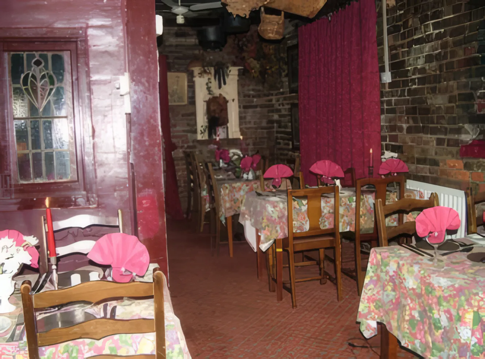
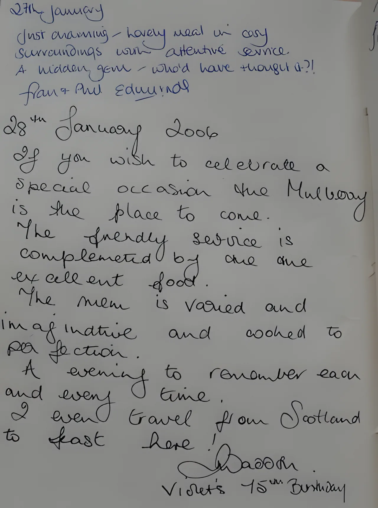
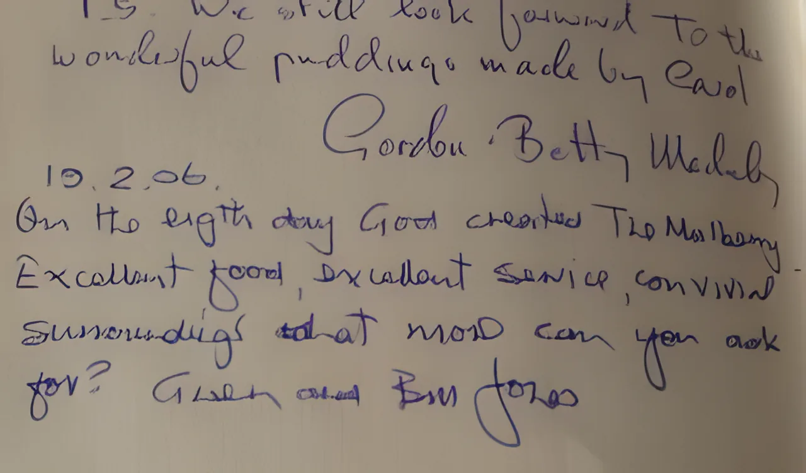
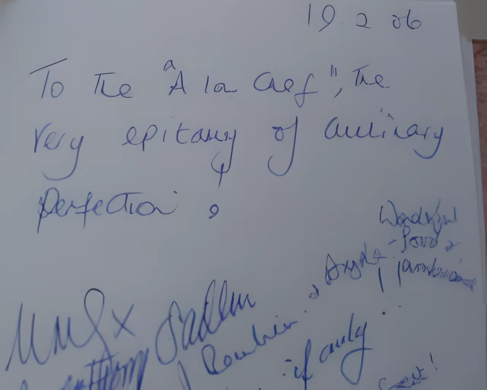
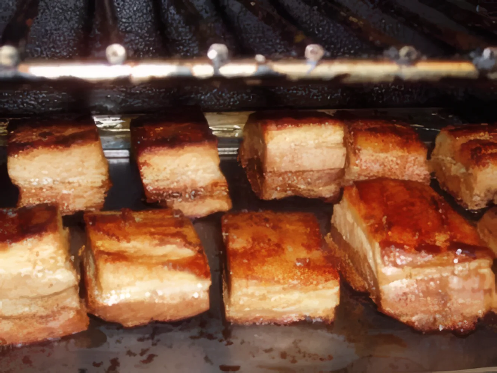
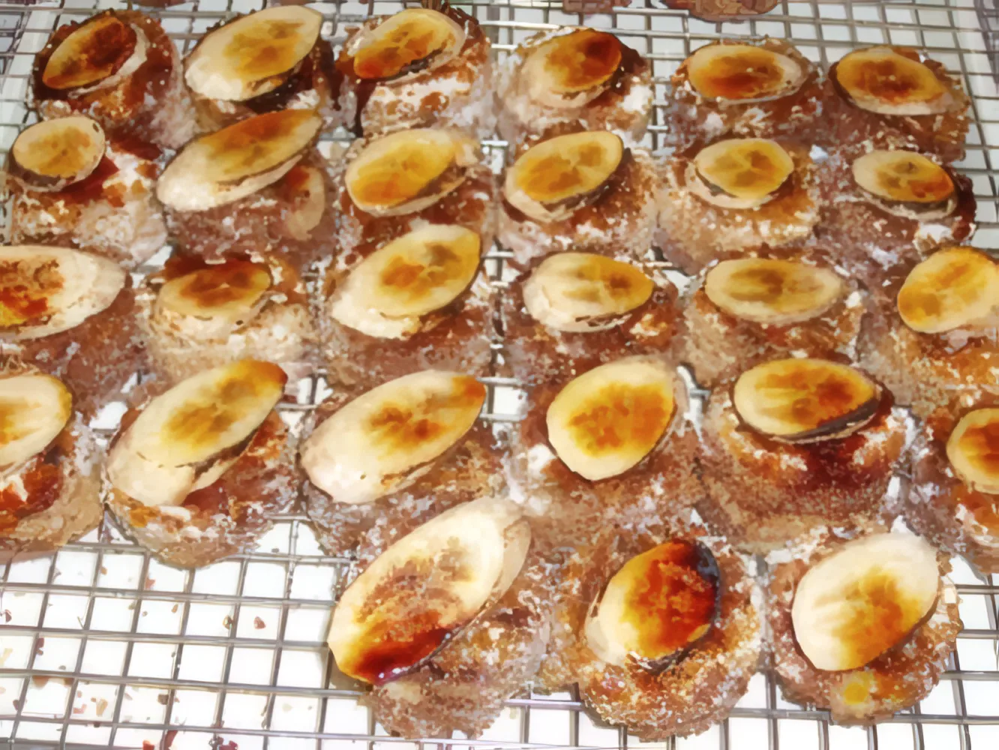

Tuesday to Saturday eveningsFrom 6.30pm, last orders 9pm. Three-course table d'hôte menu: starter, main course, dessert.
£40a head, three courses
- Coffee£2.50
- Cheese and biscuits£6.95
- Bring your own bottle, corkage£2 a head
Freshly cooked English food by candlelight, in a 16th-century building at the end of the Market Alleyway on Load Street, Bewdley. Dinner Tuesday to Saturday, and a proper Sunday lunch.

Dinner Tuesday to Saturday from 6.30pm. Sunday lunch from 12 noon.
Tuesday to Saturday eveningsFrom 6.30pm, last orders 9pm. Three-course table d'hôte menu: starter, main course, dessert.
£40a head, three courses
SundaysFrom 12 noon, last orders 2pm. Three courses plus coffee, with roast potatoes, parsnips and vegetables.
£30a head, children under 12 £15


Come over the river bridge into the centre of Bewdley. We're on Load Street, right opposite the Town Hall, next door to the George Hotel.
Look for our sign with the arrow over the alley. The front door is at the very end, under the brown awning.

Free parking behind us in the Market car park (in through Dog Lane, next to Bewdley Farm Shop), or two minutes' walk from the main car parks.
From our visitors' book



Just charming. Lovely meal in cosy surroundings with attentive service. A hidden gem, who'd have thought it?!Fran & Phil Edwards, visitors' book
On the eighth day God created The Mulberry. Excellent food, excellent service, convivial surroundings, what more can you ask for?Gwen and Bill Jones, 19 February 2006
If you wish to celebrate a special occasion the Mulberry is the place to come… An evening to remember each and every time. I even travel from Scotland to feast here!Violet's 75th birthday, 28 January 2006
More recent reviews: The Mulberry on Google
The restaurant can be booked any time for a party, with special party and wedding reception menus. On Mondays and Sunday evenings we'll open just for you if you're 20 or more. And Jonathan and the team will cook at your place too.


The Market Place, Load Street, Bewdley, Worcestershire DY12 2AP
At the end of the Market Alleyway, opposite the Town Hall, next to the George Hotel.
Under 10 minutes from Kidderminster and Stourport, 25 from Worcester, 30 from Birmingham.
| Tuesday | 6.30pm till close |
| Wednesday | 6.30pm till close |
| Thursday | 6.30pm till close |
| Friday | 6.30pm till close |
| Saturday | 6.30pm till close |
| Sunday | 12 noon till close |
| Monday | Closed, parties of 20+ only |